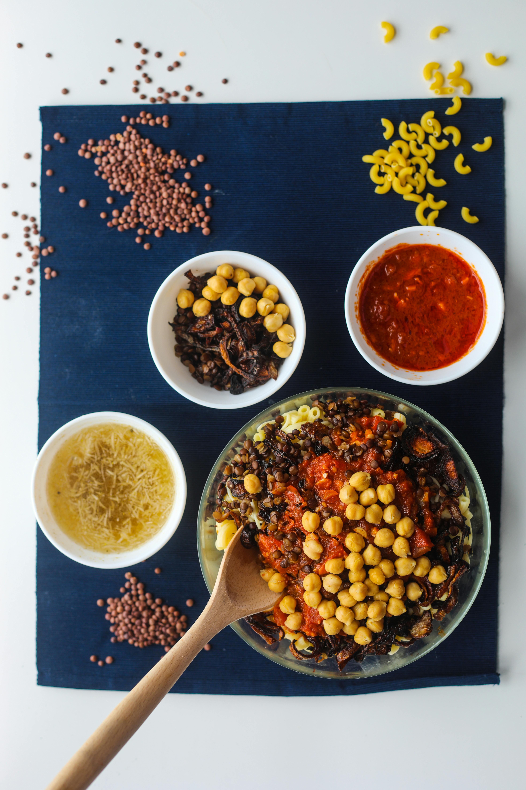

home
koshari-recipe

Description
Koshari is Egypt's beloved national dish, a hearty, flavorful vegetarian mix of rice, lentils, pasta, chickpeas, all layered and topped with a tangy tomato sauce, garlic vinegar (dakka), and abundant crispy fried onions, creating a unique blend of textures and sweet, sour, spicy tastes. It's a cheap, filling street food staple with origins tracing back to India and Italy, reflecting Egypt's diverse history.
Ingredients
the base (carbs)
- Egyptian Rice: 1 cup (short-grain)
- Brown Lentils: 1 cup (often called Adas Gebba)
- Vermicelli: ½ cup (thin noodles, toasted until golden)
- Macaroni: 2 cups of a mix (usually small elbow macaroni and broken pieces of spaghetti)
- Water & Salt: For boiling
- Cumin: A pinch for the rice/lentils
The "Ward" (Crispy Onions)
- Onions: 3–4 large onions (sliced into very thin rings or half-moons)
- Flour or Cornstarch: 2 tablespoons (to toss the onions in for extra crunch)
- Oil: 1–2 cups of vegetable oil for deep frying
The Sauces
A. Tomato Sauce (Salsa):
- Tomato Puree: 2 cups (fresh blended tomatoes or canned)
- Garlic: 4–5 cloves (minced)
- Vinegar: 2 tablespoons (white vinegar)
- Spices: Salt, black pepper, 1 tsp cumin, and 1 tsp dry coriander
- Sugar: A pinch (to balance the acidity)
B. Garlic Vinegar (Dakka):
Garlic: 3 cloves (crushed)
Vinegar: ¼ cup
Warm Water: ¼ cup
Lemon Juice: 1 tablespoon
Spices: 1 tsp cumin, salt, and a pinch of chili flakes
C. Chili Oil (Shatta):
- Chili Powder/Flakes: 1–2 tablespoons
- Reserved Tomato Sauce: 2 tablespoons
- Onion Oil: 2 tablespoons
Garnish
- Chickpeas: 1 cup (cooked or canned)
Steps for making the recipes
tep 1: The Crispy Onions (The "Ward")
This is the most important step because you will use the leftover oil for everything else.
- Toss your thin onion slices with a bit of flour or cornstarch and a pinch of salt.
- In a large pan, heat the oil and fry the onions until they are deep golden brown (be careful not to burn them, or they will taste bitter).
- Remove them and let them drain on paper towels. They will get crispier as they cool. Save that oil!
Step 2: The Rice and Lentils
- Boil the Lentils: Put the brown lentils in a pot with water and a bit of cumin. Boil for about 15–20 minutes until they are "half-cooked" (tender but still firm). Drain them.
- Toast the Vermicelli: In another pot, take 2–3 tablespoons of the onion oil and fry the vermicelli until it is golden brown.
- Combine: Add the washed rice to the vermicelli and stir. Add the half-cooked lentils.
- Cook: Add salt, cumin, and enough water to cover the mixture by about 2cm. Cook it just like regular rice (boil, then simmer on low heat until the water is absorbed).
Step 3: The Pasta
- Boil the macaroni and spaghetti in salted water until al dente.
- Drain the pasta.
- The Secret Touch: While the pasta is still hot in the colander, toss it with 2 tablespoons of the onion oil. This prevents it from sticking and gives it the signature Koshari smell.
Step 4: The Red Sauce (Salsa)
- In a saucepan, heat 2 tablespoons of the onion oil.
- Add the minced garlic and sauté until fragrant (don't let it brown).
- Add the vinegar—it will sizzle! Then quickly add the tomato puree.
- Add salt, pepper, cumin, dry coriander, and a pinch of sugar.
- Let it simmer on low heat for about 15–20 minutes until it thickens.
Step 5: The "Dakka" (Garlic Vinegar Sauce)
- In a small bowl or jar, mix the crushed garlic, vinegar, lemon juice, cumin, and salt.
- Add about half a cup of warm water and stir well. (Some people like to give this a quick 1-minute boil on the stove, but raw is also great).
Step 6: The "Shatta" (Chili Oil)
Warning: This will be very spicy!
- Heat 1 tablespoon of the onion oil in a small pan.
- Add the chili powder and stir for 30 seconds (don't inhale the fumes!).
- Add a ladle of the prepared tomato sauce to it and stir. Remove from heat.